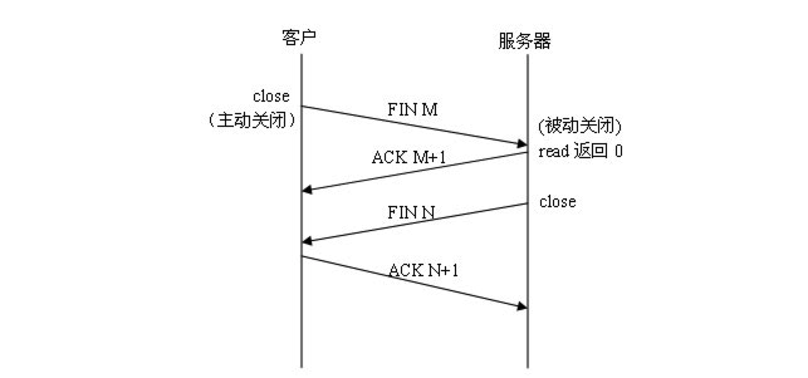

1.网络参考模型
| OSI中的层级 | 功能 | TCP/IP协议族 |
|---|---|---|
| 应用层 | HTTP，SNMP，FTP，SMTP，DNS，Telnet 等 | |
| 表示层 | 数据格式化，代码转换，数据加密 | |
| 会话层 | 解除或建立与别的站点的联系 | |
| 传输层 | 提供端对端的接口 | |
| 网络层 | 为数据包选择路由 | IP，ICMP，OSPF，EIGRP，IGMP |
| 数据链路层 | 传输有地址的帧以及错误检测功能 | SLIP，CSLIP，PPP，MTU |
| 物理层 | 以二进制数据形式在物理媒体上传输数据 | ISO2110，IEEE802，IEEE802.2 |
OSI 参考模型全称是开放系统互连参考模型(Open System Interconnection Reference Model)。这一参考模型共分为七层：物理层、数据链路层、网络层、传输层、会话层、表示层和应用层。
1.1 物理层
作用：将数据的0,1转换为电信号或者光信号
1.2 数据链路层
数据链路层是负责接收 IP 数据包并通过网络发送，或者从网络上接收物理帧，抽出 IP 数据包，交给 IP 层 。
1.3 网络层
负责相邻计算机之间的通信。实现将数据传输到目标地址的功能
网络层协议包括：
- IP协议： 网络层的核心，通过路由选择将下一条IP封装后交给接口层。IP数据报是无连接服务。
- ICMP协议： 是网络层的补充，可以回送报文。用来检测网络是否通畅。
- ARP协议： 正向地址解析协议，通过已知的 IP，寻找对应主机的 MAC 地址。
- RARP协议： 反向地址解析协议，通过 MAC 地址确定 IP 地址。
1.4 传输层
提供应用程序间的通信。管理两个节点之间的数据传输，指定通信端口
传输层协议包括：
- TCP协议： 传输控制协议
- UDP协议： 用户数据报协议
1.5 会话层
负责建立和断开通信连接
1.6 表示层
将应用处理的信息转换为适合网络传输的格式
1.7 应用层
向用户提供一组常用的应用程序，比如电子邮件、文件传输访问、远程登录等。
应用层协议包括：
FTP协议： 文件传输协议，一般上传下载用FTP服务，数据端口是 20H，控制端口是 21H。
TELNET协议： 用户远程登录服务，使用 23H 端口，使用明码传送，保密性差、简单方便。
DNS协议： 域名解析服务，提供域名到 IP 地址之间的转换，使用端口 53
SMTP协议： 简单邮件传输协议，用来控制信件的发送、中转，使用端口 25
NFS协议： 网络文件系统，用于网络中不同主机间的文件共享。
HTTP协议： 超文本传输协议，用于实现互联网中的 WWW 服务，使用端口 80 。
2.ICMP
2.1 ICMP介绍
ICMP，全称是 Internet Control Message Protocol，即互联网控制报文协议。属于网络层，它的主要功能是传输网络诊断信息，信息主要包括两类：
- 一类是 查询类报文 ：主要用于信息的查询和采集，比如采集传输路径上的每个路由器都是谁，本次传输的报文是否达到目的地等等。
- 另一类是 差错诊断类报文 ：主要用于诊断网络故障，比如传输报文被丢弃的原因是什么等等。
2.2 ICMP作用
IP 协议是一个不可靠协议，如果 IP 包在传输过程中出现错误，比如拥塞，超时等等，那么 IP 包是会直接被丢弃的，之后也不会有进一步的努力来修正。
通过 ICMP 协议，当 IP 包发生错误的时候，上层发送 IP 包的主机或路由器并不知道下层发生了错误，这个时候，下层的主机或路由器就可以通过发送 ICMP 包，将错误信息汇报给上层，从而让上层的主机或路由器进行调整。
不过需要注意的是，ICMP 仅仅只能提供某些特定类型的错误信息汇报，并不能帮助 IP 协议成为可靠的协议。它能做的事还是有限，但用于基本的网络质量管理是足够了。
ICMP的功能是检错而不是纠错。
2.3 ICMP数据报格式
ICMP是IP协议的一部分，因此，ICMP协议的报文包含在IP数据报的数据部分：
1）类型（Type）：4位，标明ICMP报文的作用及格式。
2）代码（Code）：4位，标明报文的类型。
3）校验和：8位，检验报文是否有误。
ICMP协议主要通过 Type 和 Code 的组合，来标明报文的类型
2.4 ICMP命令
2.4.1 ping
ping命令能够验证网络的连通性，统计响应时间和TTL(IP包中的Time To Live，生存周期)
2.4.2 tracert
tracert命令能够打印出可执行程序主机，一直到目标主机之前经历多少路由器。
3.TCP
TCP（Transmission Control Protocol 传输控制协议）传输控制协议，是一种面向连接的、可靠的、基于字节流的传输层协议。通俗地说TCP就是对于传输、发送、通信进行控制的协议 。
3.1 TCP的三次握手和四次挥手
3.1.1 三次握手
第一次握手：客户端发送请求连接SYN（同步报文段，代表请求建立连接），并进入SYN_SENT状态，等待服务器的确认；
第二次握手：服务器收到连接请求后向客户端发送请求连接SYN，和确认报文段ACK（ACK=1代表有效），并进入SYN_RECD状态；
第三次握手：客户端收到报文后向服务器发送确认报文段ACK，并进入established状态，开始读写数据，服务器收到报文后也进入established状态，开始读写数据
简述：
- 第一次握手：服务端确认“服务端收、客户端发”报文功能正常 ；
- 第二次握手：客户端确认“客户端收、客户端发、服务端收、服务端发”报文功能正常，客户端认为连接已建立。
- 第三次握手：服务端确认“服务端发、客户端收”报文功能正常，此时双方均建立连接，可以正常通信。
3.1.2 四次挥手

第一次挥手：客户端进程发出连接释放报文，并且停止发送数据FIN=1。
第二次挥手：服务器收到连接释放报文，发出确认报文，ACK=1 ， 此时服务端就进入了CLOSE-WAIT（关闭等待）状态。 客户端收到服务器的确认请求后，此时客户端就进入FIN-WAIT-2（终止等待2）状态，
第三次挥手： 服务器将最后的数据发送完毕后，就向客户端发送连接释放报文，FIN=1
第四次握手：客户端收到服务器的连接释放报文后，必须发出确认，ACK=1
3.2 tcp特点
面向连接： 指发送数据之前必须在两端建立连接， 为数据的可靠传输打下了基础。
单播：每条TCP连接只能有两个端点，只能进行点对点的数据传输。
面向字节流：以字节流方式进行传输。
提供拥塞控制： 当网络出现拥塞的时候，TCP能够减小向网络注入数据的速率和数量，缓解拥塞 。
全双工： TCP允许通信双方的应用程序在任何时候都能发送数据。
4.UDP
UDP协议全称是用户数据报协议，在网络中它与TCP协议一样用于处理数据包，是一种无连接的协议。
4.1 UDP特点
可单播、广播；
面向报文： 发送方的UDP对应用程序交下来的报文，在添加首部后就向下交付IP层，既不合并，也不拆分，而是保留这些报文的边界。
不可靠：udp不需通信双方建立连接；
高效：udp头部开销小，只有8字节，相比于tcp的至少要20字节少的多，能高效传输报文
4.2 TCP和UDP对比